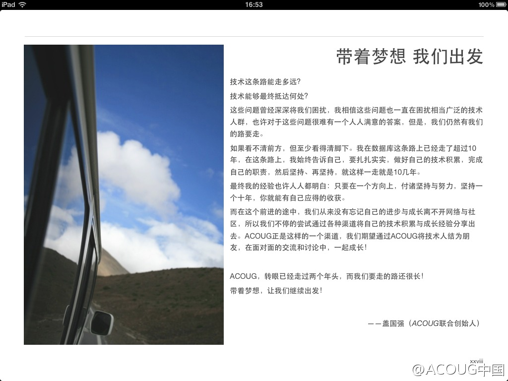

甲骨文有个部门，GEAP (Global Enterprise Architect Program)专门制定关于企业架构的一些标准，培训，以及认证。目前与@甲骨文大学 合作推出的架构师认证，Certified Architecture Specialist，只面向合作伙伴 。详情见： 网页链接
3月27日12:00pm-4:30pm, 有个在线的“Java开发者日”， 介绍Java SE 7, Java FX 2.0 以及Java SE 8路线图，详情及注册地址： 网页链接 @甲骨文Java社区
ACOUG上的技术文章也可以放到OTN上（Oracle Developer Network)上, 网页链接@ACOUG中国:欢迎大家为ACOUG Magazine推荐或自荐优秀的文章，具体推荐方式请见网页链接 求扩散求推荐 @eygle @KayaHuang @小事儿爹 @Ada李力 @家常咖啡 @幸福的ora-600 @hellodba @正牌三少 @支付宝-冯春培 @secooler @Liu_Maclean @刘磊315 @叶熙昌Romeo @huaixm @jeffli73 

 网页链接 @甲骨文Java社区
网页链接 @甲骨文Java社区